禾序 · 11套独立管理首页 / 1440px 实际浏览器截图
01 禾序 · Grove Desk — 均衡经营台
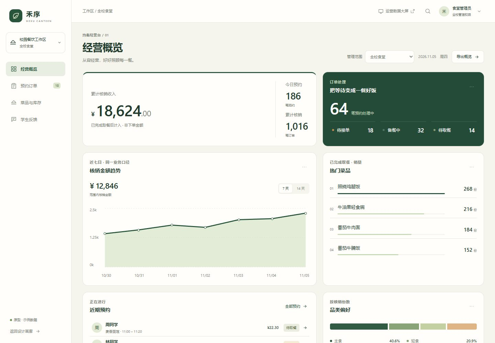
02 Service · 出餐现场 — 订单优先
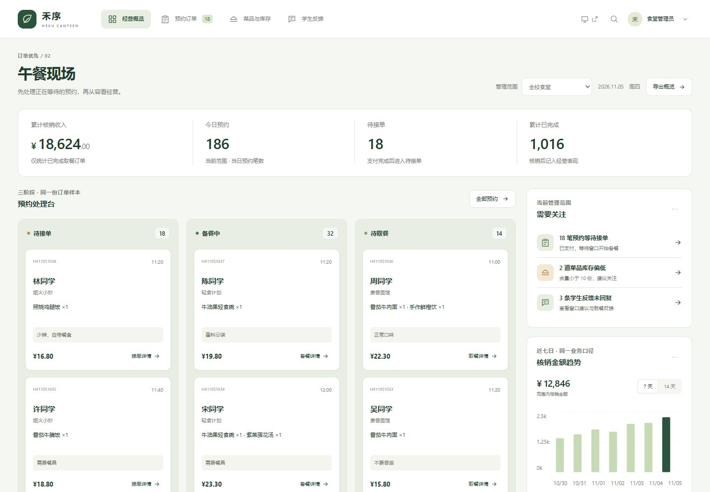
03 Ledger · 经营手记 — 编辑式经营页
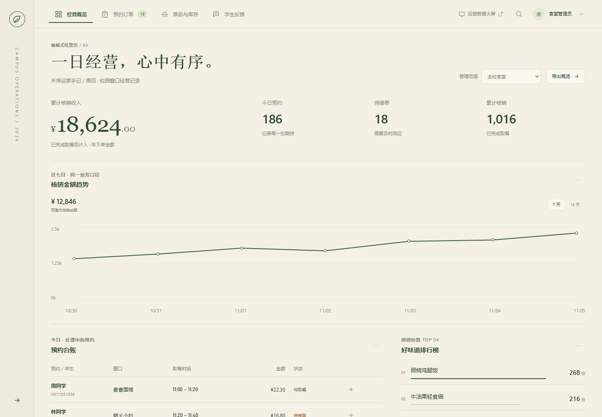
04 Quiet · 极简工作区 — 去卡片化
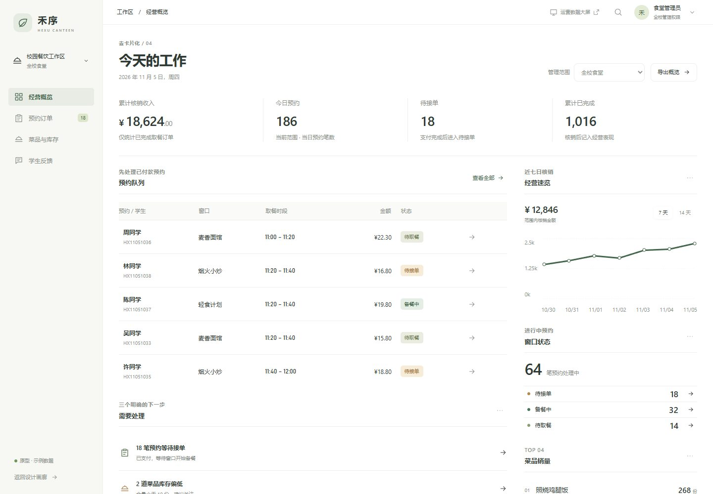
05 Float · 浮岛经营台 — 悬浮导航
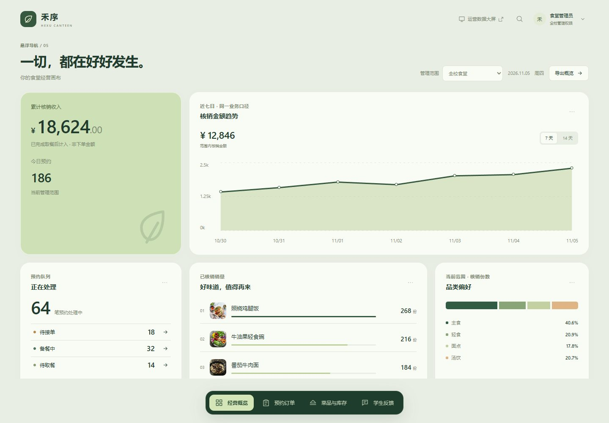
06 Night Pass · 夜班值守 — 深色专业台
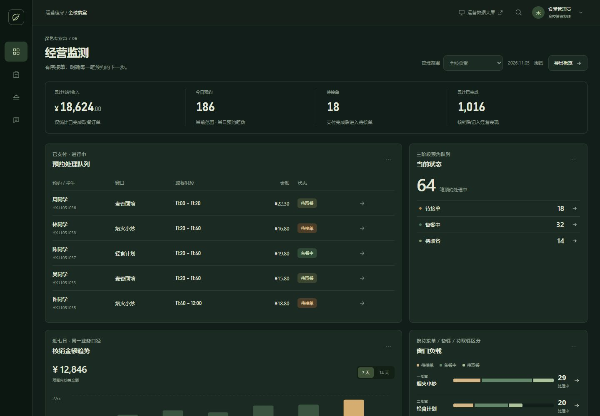
07 Campus · 多窗口视角 — 窗口协同
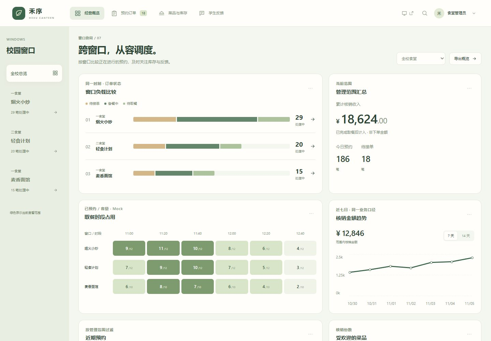
08 Tempo · 预约节奏 — 时段优先
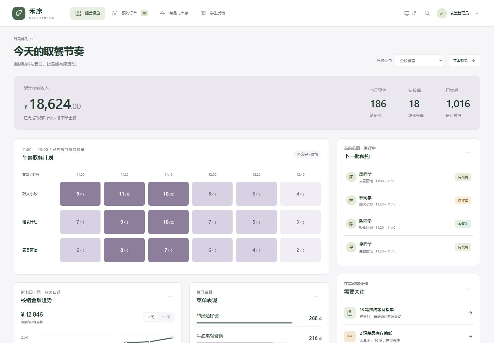
09 Signal · 情境工作台 — 指令式工作区
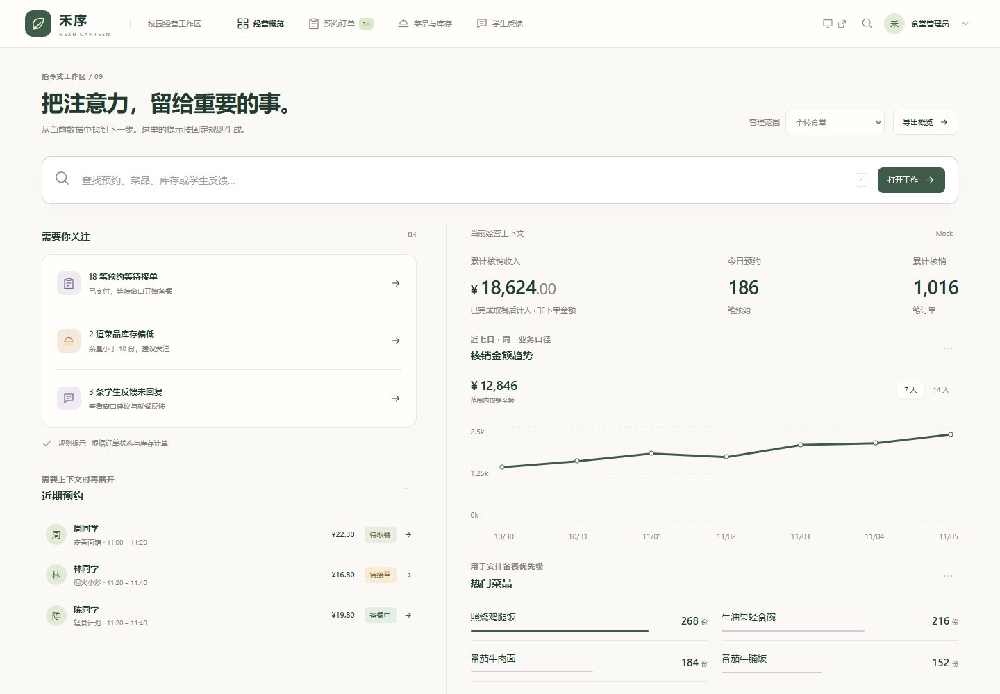
10 Pantry · 餐饮品牌运营 — 精品餐饮
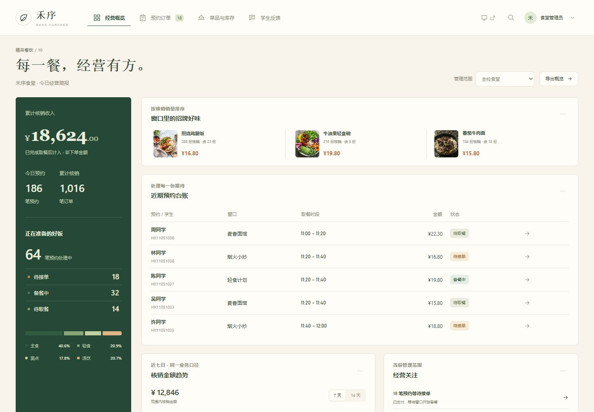
11 Studio · 融合经营台 — 顶部导航 + Bento + 浮动工具栏
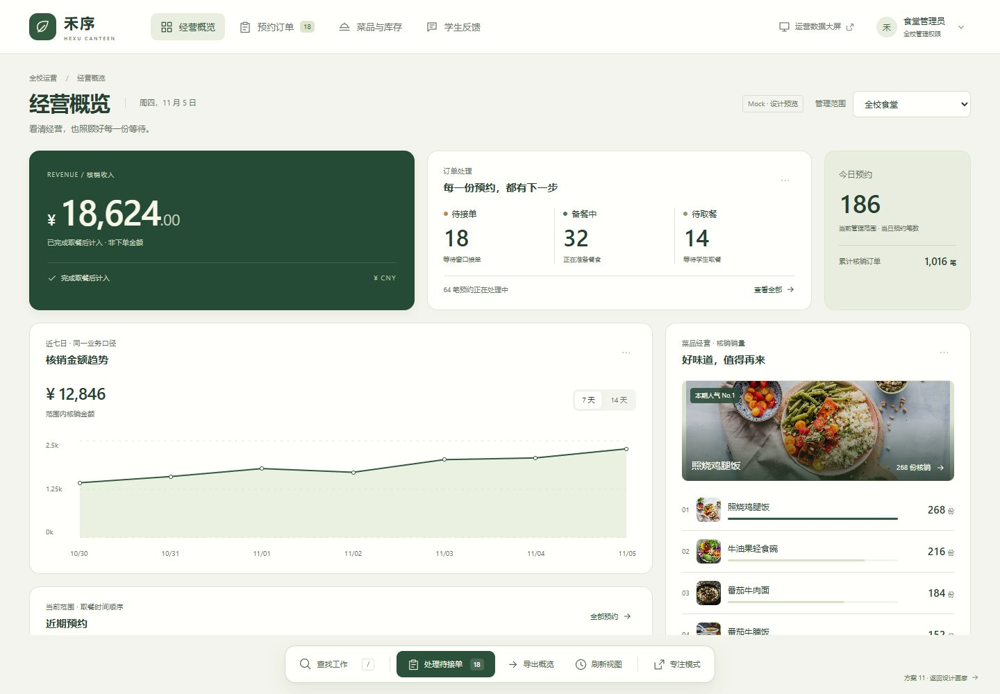